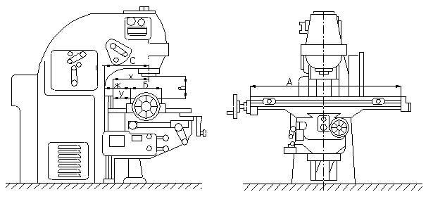
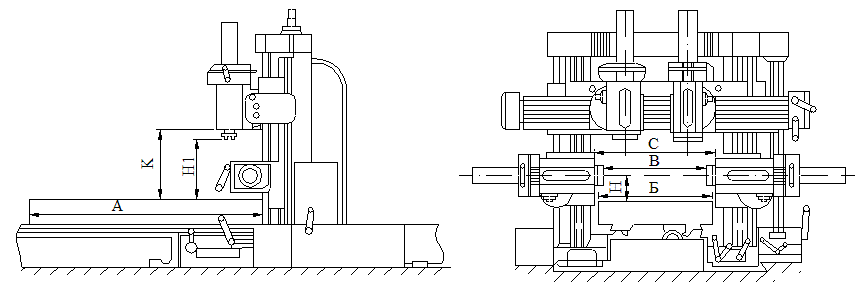

Фрезерный станок в металлообработке, металлорежущий станок для обработки резанием при помощи фрезы, наружных и внутренних плоских и фасонных поверхностей, пазов, уступов, поверхностей тел вращения, резьб, зубьев зубчатых колёс и т.п.
По назначению фрезерные станки разделяют на универсально-, горизонтально-, вертикально-, продольно-, копировально-, резьбо-, шпоночно-, карусельно-, барабанно-фрезерные и др. По конструкции фрезерные станки могут быть консольные и бесконсольные. Главное движение у фрезерных станков (вращательное) осуществляется фрезой, движение подачи (поступательное) — заготовкой; в некоторых случаях (например, при обработке крупных изделий) движение подачи может сообщаться фрезе.
Универсально-фрезерный станок консольной конструкции характеризуется горизонтальным расположением оси шпинделя, имеет хобот с подвеской для крепления оправки фрезы и предназначен для работы с разными типами фрез. Станок имеет поворотный (в горизонтальной плоскости) стол, что позволяет фрезеровать винтовые канавки; стол может перемещаться в продольном, поперечном и вертикальном направлениях.
Горизонтально-фрезерный станок аналогичен универсально-фрезерному, но его стол не имеет возможности поворачиваться.
Вертикально-фрезерный станок по конструкции близок к горизонтально- и универсально-фрезерным станкам, но отличается от них вертикальным расположением оси шпинделя.
Продольно-фрезерный станок предназначен для обработки различных плоскостей у крупногабаритных заготовок (или их групп), установленных в многоместных приспособлениях на столе станка, главным образом торцовыми фрезами. На вертикальных стойках станка, смонтированных на станине, расположены боковые фрезерные головки, а также поперечина с вертикальными фрезерными головками. Каждая головка имеет индивидуальный привод вращения шпинделя; оси шпинделей могут перемещаться в горизонтальной и вертикальной плоскостях, а также устанавливаться под углом. Продольную подачу имеет стол, поперечную — вертикальные фрезерные головки, а вертикальную — боковые. Все фрезерные головки имеют общий привод подач.
В промышленности находят всё более широкое применение различные типы фрезерных станков с программным управлением.